Note
Go to the end to download the full example code.
Relaxed Kačanov iteration for p-Poisson problem with adaptive error control¶
In this demo, we will first describe and then implement the adaptive error control algorithm for p-Poisson problem using relaxed Kačanov method
p-Poisson Problem¶
The strong from of the p-Poisson problem is defined as follows:
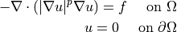
The weak from of the p-Poisson problem is defined as follows:
Find in
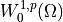
such that the following holds for all in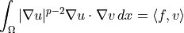
for open and bounded
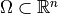
and for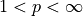
The solution of such problem is also the unique minimizer of the energy
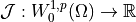
defined as: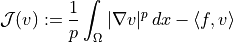
Relaxed Kačanov iteration¶
The weak formulation can be understood as the following weighted Poisson problem:
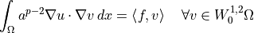
for given
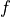
and such that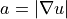
.We can than look for the iterative solution
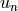
in the following fashion: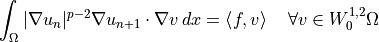
which only requires solving a linear problem. This problem might be ill-posed in case that the weight
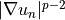
aproaches zero or gets too large.A possible solution is the introduction of two relaxation parameters ,
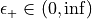
,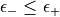
, which will ensure that will be bounded from above and from zero. We will also write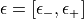
. We will therefore replace by the following quantity: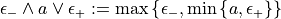
Note that this is identity if
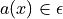
otherwise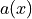
gets assigned or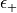
depending on which one is closer. For the case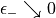
and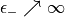
we recover the original problem.This is leads us to the following algorithm:
Algorithm: The relaxed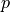
-Kačanov algorithm Data: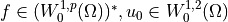
Initialize: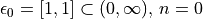
while desired accuracy is not achieved do │ Define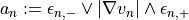
│ │ Calculate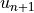
by solving: │ │; │ │ Choose new relaxation interval
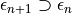
; │ Increase by 1; end
this algorithm is called the Relaxed Kačanov method. A justification of why it converges can be find for example here [DFW22].
We will now discuss how to choose
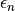
. In [DFW22] the following choice of is suggested:
is suggested:
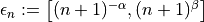
with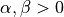
and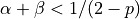
However it is possible to do even better by utilizing adaptive error estimates, which we will discuss in the following section.
Error estimates¶
We will start by defining the following energy:
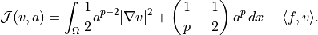
Note that this energy does coincide with the original energy for
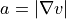
. This newly defined energy is also convex with respect to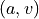
since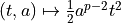
is convex on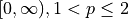
and the addition of two convex functions is still a convex function. Minimization of this energy energy leads to the following problem: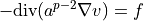
However this problem loses its ellipticity as
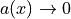
and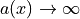
.The remedy is to restrict to
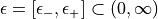
We can than define another relaxed energy: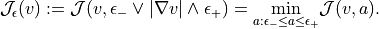
The relaxed energy
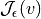
is monotonically decreasing with respect to i.e increasing the relaxation interval decreases the energy . We can also write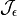
explicitely as: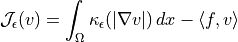
with
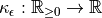
given by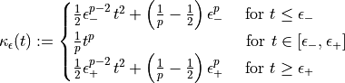
Next let us define
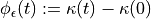
Explicitely
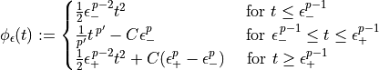
which is an example of so-called N-function. Observe that
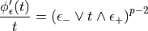
Next we will compute the convex conjugate of which we will need later.
where is the usual conjugate exponent of s.t. and
Next we define for all the shifted N-function by its derivative
With all this prepared we can explicitely write down needed for the discretization and linearization error estimators.
Warning! We have collision of notation as the lower index means both — a funcition defined above and the truncation of a function. Therefore we will write which means truncated by .
To make our lives easier we can use Lemma 33 of [DFW22]:
and the following property of :
which is a direct consequence of the definition of the convex conjugate. Defining we can write:
Finally we are ready to introduce the adaptive version of the previous algorithm. This method will capture the effect of truncation of , the discretization error and the fixpoint iteration error. Lets start by defining the following error measures:
Upper truncation error
which measures the effect of the upper truncation bound .
Lower truncation error
which measures the effect of the lower truncation bound .
Discretization error
We use the optimal estimator [DK08] with the to estimate discretiztion error on mesh element :
Linearization error
To measure the linearization error we will use the following estimator proposed in [DFW22]
with help of these estimators we can finally write down the full adaptive algorithm for the relaxed p-Kačanov iteration.
Algorithm: The relaxed -Kačanov algorithm
Data:
Initialize: ,
while desired accuracy is not achieved do
│ Define
│
│ Calculate by solving
│
│
│ Increase the total cost by the current number of degrees of freedom
│
│ Compare the estimators  :
│ if is largest:
│
│ if is largest:
│
│ if is largest:
│ refine the mesh by Dörfler marking
│ if is largest:
│ set
end
:
│ if is largest:
│
│ if is largest:
│
│ if is largest:
│ refine the mesh by Dörfler marking
│ if is largest:
│ set
end
Note
Go to the end to download the full example code.
p-Poisson solver with adaptive error control in Firedrake by Michael Moncek
Implementation¶
Lets begin by importing the necessary libraries:
import firedrake as fd
from firedrake import *
import numpy as np
from netgen.occ import *
This is a safeguard as inner(v,v) might return negative value because of FPA
def norm_safe(v):
return sqrt(max_value(inner(v,v), 0.0))
We will write in slightly convoluted way to avoid problems with FPA
def kappa(t, p, eps_minus=0.0, eps_plus=float("inf")):
"""
kappa_eps(t), Sec. 2 of (DFW22)
"""
def j(eps):
return (0.5*eps**(p-2)*t**2 + (1/p-0.5)*eps**p)
expr = 1/p * t**p
if float(eps_minus) > 0.0: # don't truncate for small eps
expr = conditional(le(t, eps_minus), j(eps_minus), expr)
if float(eps_plus) < float("inf"): # don't truncate for large eps
expr = conditional(ge(t,eps_plus), j(eps_plus), expr)
return expr
Energy :
def J_eps(v, f, p, eps_minus=0.0, eps_plus=float("inf")):
"""
Eq 2.2, Sec. 2 of (DFW22)
"""
grad_norm = norm_safe(grad(v))
return kappa(grad_norm, p, eps_minus, eps_plus)*dx - f*v*dx
Next let us define the clamp function
which will be very useful throughout.
def clamp(t, eps_minus, eps_plus):
"""
max{eps_minus, min{t, eps_plus}}
"""
return max_value(eps_minus, min_value(t, eps_plus))
Define
def phi_eps(t, eps_minus, eps_plus, p):
"""
Equation (3.1) in (DFW22),
phi_eps(t) = kappa_eps(t) - kappa_eps(0)
"""
const = (1/p - 0.5)
low_branch = 0.5 * eps_minus**(p-2) * t**2
mid_branch = (1/p) * t**p - const * eps_minus**p
high_branch = (0.5 * eps_plus**(p-2) * t**2
+ const * (eps_plus**p - eps_minus**p))
return conditional(le(t, eps_minus), low_branch,
conditional(le(t, eps_plus),
mid_branch, high_branch))
We will also need the convex conjugate (Legendre transform, Fenchel conjugate) of :
def phi_eps_conj(t, eps_minus, eps_plus, p):
"""
Convex conjugate of Eq (3.1) in (DFW22)
"""
pp = p / (p-1) # conjugate exponent of p s.t. 1/p + 1/pp = 1
const = (1/p - 0.5)
low_branch = 0.5 * eps_minus**(2-p) * t**2
mid_branch = (1/pp) * t**pp + const * eps_minus**p
high_branch = (0.5 * eps_plus**(2-p) * t**2
- const * (eps_plus**p - eps_minus**p))
return conditional(le(t, eps_minus**(p-1)), low_branch,
conditional(le(t, eps_plus**(p-1)),
mid_branch, high_branch))
and we will need - the convex conjugate of the shift of
def phi_eps_shift_conj(t, a, eps_minus, eps_plus, p):
"""
Convex conjugate of the shifted N-function phi_eps
Eq (3.1) in (DFW22), used for the error estimators
in section 6 of (DWF22)
"""
Ca = clamp(a, eps_minus, eps_plus)
b = Ca**(p-2) * a
low_branch = 0.5 * Ca**(2-p) * t**2
high_branch = (phi_eps_conj(t, eps_minus, eps_plus, p) +
phi_eps(a, eps_minus, eps_plus, p) -
0.5 * Ca**(p-2) * a**2)
return conditional(le(t, b), low_branch, high_branch)
Now, we are ready to implement the following error measures:
Upper truncation error
which measures the effect of the upper truncation bound .
def eta2_plus(v, f, eps_minus, eps_plus, p):
"""
Upper truncation error squared
"""
return (J_eps(v, f, p, eps_minus, eps_plus) -
J_eps(v, f, p, eps_minus, float("inf")))
Lower truncation error
which measures the effect of the lower truncation bound .
def eta2_minus(v, f, eps_minus, eps_plus, p):
"""
Lower truncation error squared
"""
return (J_eps(v, f, p, eps_minus, eps_plus) -
J_eps(v, f, p, 0.0, eps_plus))
Discretization error
We use the optimal estimator [DK08] with the to estimate discretiztion error on mesh element :
where is the jump of . The quantities are the characteristic lengths of a facet and triangle (element) respectively and is defined as:
def V_eps(v, eps_minus, eps_plus, p):
"""
Definition 7 (DFW22)
"""
t = norm_safe(v)
s = clamp(t, eps_minus, eps_plus)
return s**(p/2 -1) * v
Here we use a neat trick to transform the estimator into the following problem by working on a piecewise constant DG0 space, for details see: https://www.firedrakeproject.org/demos/adaptive_multigrid.py.html
def eta2_disc(mesh, uh, f, eps_minus, eps_plus, p):
"""
Discretization error from (DK08)
"""
h_T = CellDiameter(mesh) # characteristic length of Triangle
h_F = FacetArea(mesh) # characteristic length of Facet
vol = CellVolume(mesh)
Q = FunctionSpace(mesh, "DG", 0)
q = TestFunction(Q)
phi = TrialFunction(Q)
grad_uh = grad(uh)
norm_grad_uh = norm_safe(grad_uh)
eta2 = Function(Q)
# compute cellwise error estimator
V_grad = V_eps(grad_uh, eps_minus, eps_plus, p)
jump_V_grad = jump(V_grad)
a = inner(phi, q / vol) * dx
# t = h_T * norm(f)
t = h_T * abs(f)
integrand = phi_eps_shift_conj(t, norm_grad_uh,
eps_minus, eps_plus, p)
L = (integrand * q * dx +
(inner(jump_V_grad, jump_V_grad) * 2 * avg(q * h_F)) * dS)
sp = {"mat_type": "matfree", "ksp_type": "preonly", "pc_type": "jacobi"}
solve(a == L, eta2, solver_parameters=sp)
# compute eta from eta^2
eta = Function(Q, name="eta").interpolate(sqrt(eta2))
with eta.dat.vec_ro as eta_:
error_disc = eta_.norm()**2
return eta, error_disc
Linearization error
To measure the linearization error we can either choose the following estimator proposed in [DFW22]
or we can work with the natural distance which is the (integrated) Bregman divergence between associated with [Gaz26]:
where is the clamp function defined above. We will choose the first definition to work with, however we have implemented both for good measure.
def eta2_lin(u, u_, eps_minus, eps_plus, p):
"""
Linearization error proposed in (Gaz26)
"""
norm_grad_u_ = norm_safe(grad(u_))
norm_grad_u = norm_safe(grad(u))
a = clamp(norm_grad_u, eps_minus, eps_plus)**(p-2)
energy_diff = (phi_eps(norm_grad_u_, eps_minus, eps_plus, p)
- phi_eps(norm_grad_u, eps_minus, eps_plus, p)
)
correction = a * inner(grad(u), grad(u_) - grad(u))
return (energy_diff - correction)*dx
def eta2_lin_kac(u, u_, eps_minus, eps_plus, p):
"""
Linearization error proposed in (DFW22)
"""
a = norm_safe(grad(u_))
C = clamp(a, eps_minus, eps_plus)**(p-2)
s = C * norm_safe(grad(u_) - grad(u))
return phi_eps_shift_conj(s, a, eps_minus, eps_plus, p) * dx
Helper functions¶
This function does the ‘Kačanov step’ i.e. the following part of the algorithm:
│ Calculate by solving: │ │ ;
def kacanov_step(u_, f, bc, V, atm, eps_minus, eps_plus, p):
"""
Do one Kacanov step i.e. Solve the linear poisson problem
-div(a*grad(u)) = f with coefficient matrix
a = clamp(grad(u_), eps_minus, eps_plus)
"""
u = TrialFunction(V)
v = TestFunction(V)
bc = DirichletBC(V, 0.0, "on_boundary")
un = Function(V, name="u")
grad_norm = norm_safe(grad(u_))
a = clamp(grad_norm, eps_minus, eps_plus)**(p-2)
F = a*inner(grad(u), grad(v))*dx - f*v*dx
problem = fd.LinearVariationalProblem(lhs(F), rhs(F), un, bc)
sp = {"ksp_type": "preonly", "pc_type": "lu",
"pc_factor_mat_solver_type": "mumps"}
solver = fd.LinearVariationalSolver(problem,
solver_parameters=sp)
solver.set_transfer_manager(atm)
solver.solve()
return un
This function computes the estimated errors
│ :
def estimate_errors(mesh, u, u_, f, eps_minus, eps_plus, p):
"""
Returns (eta, errors) - discretization error on each element
and dictionary of the linearization, plus, minus and
discretization error sizes
"""
error2_minus = assemble(eta2_minus(u, f, eps_minus, eps_plus, p))
error2_plus = assemble(eta2_plus(u, f, eps_minus, eps_plus, p))
# error2_lin = assemble(eta2_lin(u, u_, eps_minus, eps_plus, p))
error2_lin = assemble(eta2_lin_kac(u, u_,
eps_minus, eps_plus, p))
eta, error2_disc = eta2_disc(mesh, u, f, eps_minus, eps_plus, p)
errors = {
"lin" : error2_lin, "plus" : error2_plus,
"minus" : error2_minus,"disc" : error2_disc
}
return eta, errors
Update the state according to the largest error estimate
def adapt(errors, eta, amh, eta_refinement, n,
refinement_num, max_refinements,
eps_minus, eps_plus, eps_tol=1e6):
"""
Update the state according to the largest error estimate
"""
largest_error = max(errors, key=errors.get)
if largest_error == "lin":
n += 1
elif largest_error == "plus":
if (abs(float(eps_plus)) <= eps_tol):
eps_plus.assign(1.25*eps_plus)
else:
n += 1
elif largest_error == "minus":
if (abs(float(eps_minus)) >= 1/eps_tol):
eps_minus.assign(0.80*eps_minus)
else:
n += 1
else: # "disc"
if (refinement_num < max_refinements):
amh.adapt(eta, eta_refinement)
refinement_num += 1
return n, refinement_num, False
else:
return n, refinement_num, True
return n, refinement_num, False
The main function that handles the logic. The code used for graphing, plotting etc. was created with Claude.
def p_poisson(p, make_f, make_bc, make_u_exact,
mesh, amh, atm, tol=1e-8):
"""
Solves -div(|grad(u)|^(p-2) * grad(u)) = f on mesh
with boundary conditions given by 'bc'.
"""
p = Constant(p)
eps_plus = Constant(1.0)
eps_minus = Constant(1.0)
eps_tol = 1e6
eta_refinement = 0.5
refinement_num = 0
max_refinements = 15
n, n_max = 0, 1000
iter_num = 0
cost = 0
history = []
out_file = fd.VTKFile("results/u_level_0.pvd")
u_ = None
while (n < n_max):
mesh = amh[-1]
# set up exact solution, f and boundary conditions
V = FunctionSpace(mesh, "Lagrange", 1)
u_exact = make_u_exact(mesh)
f = make_f(mesh)
bc = make_bc(V)
if u_ is None:
u_ = Function(V)
elif u_.function_space() != V:
u_new = Function(V)
atm.prolong(u_, u_new)
u_ = u_new
u = kacanov_step(u_, f, bc, V, atm, eps_minus, eps_plus, p)
eta, errors = estimate_errors(mesh, u, u_, f,
eps_minus, eps_plus, p)
dofs = V.dim()
cost += dofs
# If we have exact solution available track difference in
# energies
error_energy = None
if u_exact is not None:
error_energy = (assemble(J_eps(u, f, p, eps_minus, eps_plus)) -
assemble(J_eps(u_exact, f, p)))
record = {"iter": iter_num, "n": n,
"refinements": refinement_num,
"dofs": dofs, "cost": cost,
"error_energy": error_energy,
"eps_minus": float(eps_minus),
"eps_plus": float(eps_plus),
**{k: float(v) for k, v in errors.items()}}
history.append(record)
print(f"iter={iter_num} n={n} refs={refinement_num} "
f"dofs={dofs} cost={cost} "
f"eps=[{float(eps_minus):.3g},{float(eps_plus):.3g}] "
+ " ".join(f"{k}={v:.3g}" for k, v in errors.items())
+ (f" error_energy={error_energy:.3g}"
if error_energy is not None else ""))
if (sum(errors.values()) <= tol):
print(f"Converged at iter={iter_num}.")
out_file.write(u, eta, time=iter_num)
break
ref_num_old = refinement_num
n, refinement_num, max_refinement_reached = adapt(
errors, eta, amh, eta_refinement, n,
refinement_num, max_refinements,
eps_minus, eps_plus
)
if max_refinement_reached:
print(f"Warning!: discretization error"
f"({errors['disc']:.3g}) still dominates after "
f"{max_refinements} refinements. Stopping.")
out_file.write(u, eta, time=iter_num)
break
if (refinement_num != ref_num_old):
out_file = VTKFile(
f"results/u_level_{refinement_num}.pvd"
)
Q0 = FunctionSpace(mesh, "DG", 0)
gradnorm = Function(Q0).interpolate(norm_safe(grad(u)))
with gradnorm.dat.vec_ro as gv:
print(f" max|grad u| = {gv.norm(fd.PETSc.NormType.NORM_INFINITY):.3g}")
iter_num += 1
u_.assign(u)
out_file.write(u, eta, time=iter_num)
else:
print(f"Warning!: Hit n_max={n_max} without converging "
f"tolerance tol={tol}"
)
return u, history
Set p to anything in between 1 and 2.
p = 16/10
Bump Choose and choose and such that:
def bump(p):
"""
u(x1, x2) = (x1^2 - 1)(x2^2 - 1) on [-1,1]^2,
u(x1, x2) = 0 on boundary
"""
def make_u_exact(mesh):
x, y = SpatialCoordinate(mesh)
u = (x**2 - 1) * (y**2 - 1)
return u
def make_f(mesh):
x, y = SpatialCoordinate(mesh)
u = (x**2 - 1) * (y**2 - 1)
f = -div(norm_safe(grad(u))**(p-2) * grad(u))
return f
def make_bc(V):
return DirichletBC(V, 0.0, "on_boundary")
return make_u_exact, make_f, make_bc
Needle On choose and the boundary values of s.t.
def needle(p):
"""
u(x) = |x|^{1-1/p} - 1 on [-1,1]^2.
Singular gradient at the origin -- this is the paper's stress test
for the estimator (V(grad u) has only borderline Lorentz-space regularity).
"""
reg = Constant(0.05) # regularizes the 0/0 at the origin; small enough
# not to visibly perturb u away from x=0
def make_u_exact(mesh):
x, y = SpatialCoordinate(mesh)
r = sqrt(x**2 + y**2 + reg**2)
return r**(1 - 1/p) - 1
def make_f(mesh):
x, y = SpatialCoordinate(mesh)
r = sqrt(x**2 + y**2 + reg**2)
u = r**(1 - 1/p) - 1
return -div(norm_safe(grad(u))**(p-2) * grad(u))
def make_bc(V):
x, y = SpatialCoordinate(V.mesh())
r = sqrt(x**2 + y**2 + reg**2)
u_bdry = r**(1 - 1/p) - 1
return DirichletBC(V, u_bdry, "on_boundary")
return make_u_exact, make_f, make_bc
Prepare the mesh
Omega = WorkPlane(Axes((0,0,0), n=Z, h=X)).RectangleC(2,2).Face()
geo = OCCGeometry(Omega, dim=2)
ngmsh = geo.GenerateMesh(maxh=0.5)
mesh = Mesh(ngmsh)
For the adaptive mesh refinment we will utilize firedrake’s AdaptiveMeshHierarchy and AdaptiveTransferManager
amh = AdaptiveMeshHierarchy(mesh)
atm = AdaptiveTransferManager()
Prepare boundary conditions, the rhs and the exact solution
# make_u_exact, make_f, make_bc = needle(p)
make_u_exact, make_f, make_bc = bump(p)
Run the thing
u, history = p_poisson(p, make_f, make_bc,
make_u_exact, mesh,
amh, atm, tol=1e-8
)
Function for plotting everything, once again this is Claude’s work.
import matplotlib.pyplot as plt
def plot_convergence(history, case_name):
cost = [h["cost"] for h in history]
disc = [h["disc"] for h in history]
lin = [h["lin"] for h in history]
plus = [h["plus"] for h in history]
minus = [h["minus"] for h in history]
energy = [h["error_energy"] for h in history if h["error_energy"] is not None]
fig, ax = plt.subplots(figsize=(6, 5))
if energy:
ax.loglog(cost[:len(energy)], energy,
'k:', label=r"$J(u_n) - J(u)$")
ax.loglog(cost, disc, label=r"$\eta_h^2$")
ax.loglog(cost, lin, label=r"$\eta_{Kac}^2$")
ax.loglog(cost, plus, label=r"$\eta_{\epsilon+}^2$")
ax.loglog(cost, minus, label=r"$\eta_{\epsilon-}^2$")
c0 = cost[0] if cost[0] > 0 else 1
ref = [c0 / c for c in cost] # reference slope: 1/cost
ax.loglog(cost, ref, 'k-', linewidth=1,
label=r"$\mathrm{cost}^{-1}$")
ax.set_xlabel("accumulated cost")
ax.set_ylabel("error")
ax.set_title(case_name)
ax.legend(fontsize=8)
fig.tight_layout()
fig.savefig(f"results/{case_name}_convergence.pdf")
plt.close(fig)
Plot the errors vs acumulated cost
plot_convergence(history, "bump")
# plot_convergence(history, "needle")
Here is a plot of discretization error on levels 3, 6 and 15 for “bump” with .
Level 3¶ |
Level 6¶ |
Level 15¶ |


The solutions at level 4 and 15 are shown below.
MG solution at level 4¶ |
MG solution at level 15¶ |


A runnable version of this demo can be found here.
Bibliography¶
Lars Diening, Massimo Fornasier, and Maximilian Wank. A relaxed kačanov iteration for the $p$-poisson problem. 2022. URL: https://arxiv.org/abs/1702.03844, arXiv:1702.03844.
Lars Diening and Christian Kreuzer. Linear convergence of an adaptive finite element method for the p-laplacian equation. SIAM Journal on Numerical Analysis, 46(2):614–638, 2008. URL: http://www.jstor.org/stable/40233226 (visited on 2026-08-22).
Alexei Gazca. Numerical analysis of nonlinear pde. 2026. URL: https://karlin.mff.cuni.cz/~gazca/lectures/ss26/nonlinear_pde.pdf.